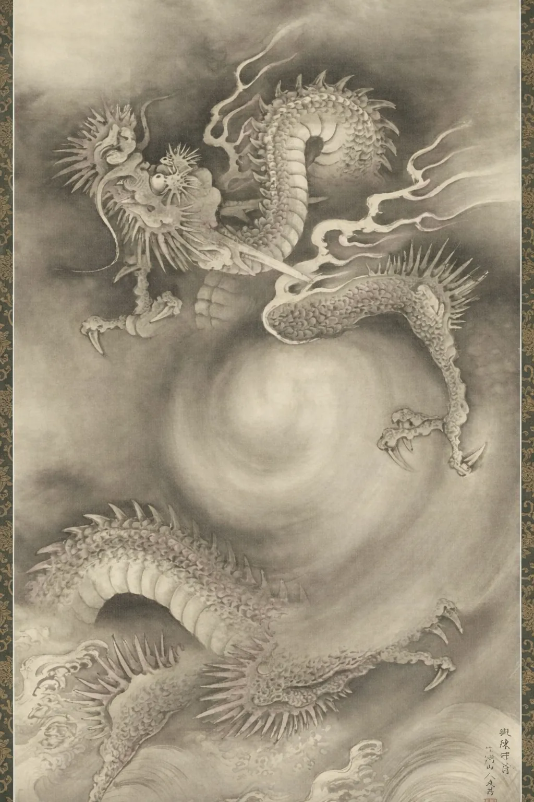

For chronic conditions
Something keeps coming back.
Migraine, fibromyalgia, IBS, chronic fatigue, autoimmune. You’ve tried everything. In TCM that isn’t bad luck — it’s a pattern with a name. See the map.
See the pattern mapTaoquen helps you write your own story and build the life you want — through Qi: real Qigong in the unbroken Wu Ming lineage of Grand Master Nan Lu. Because you cannot understand TCM until you have experienced Qi.
Three doorways onto the same path. Choose the one that meets your body where it is right now.
Migraine, fibromyalgia, IBS, chronic fatigue, autoimmune. You’ve tried everything. In TCM that isn’t bad luck — it’s a pattern with a name. See the map.
See the pattern map
For tech, finance, and consulting. A 15-minute daily practice for people who can’t take a sabbatical — and can’t keep running on caffeine.
Stop the cycle
Ten minutes between classes. A free entry track built for exam stress, sleep, and phone-burnt nervous systems.
Start freeIt didn’t happen overnight. It took many years for your body to learn how to react this way. When you want to stay calm but can’t, you have to look at it from your body’s perspective.
Over time you trained your energy to want things urgently — this, that, everything at once. You told your body that if you don’t rush, you’ll miss it. Your body learned that lesson well. And now it can’t stop.
The more Qi you have, the more body intelligence you have to meet difficult moments. The less Qi you have, the more symptoms arise when life gets hard. That’s why your world gets smaller — when Qi falls, so does everything built on top of it: your capacity for stress, your clarity, your relationships, your joy.
“Disease and illness are not random; they are signs the body has drifted out of balance.” The TCM view
The way forward is to understand why your body reacts this way. One powerful framework for that is the Five Elements — where green represents the smooth, unobstructed flow of energy through the body.
You cannot rewrite the chapters behind you. But the next one is still blank — and Qi is the ink.

Every layer of your life sits on top of your Qi. Press − and watch what falls away. Press + to build it back.
This is full Qi. Every layer has room: stress bounces off, thinking is clear, people feel easy to be around, joy arrives uninvited.
Joy goes first. Not dramatically — it simply stops arriving on its own.
Then relationships feel heavier. Patience shortens. People become effort.
Clarity fogs. Decisions that used to take a moment now take a meeting with yourself.
Until your world is exactly the size of your remaining Qi. Nothing shows up on the tests. Everything is smaller.
Qi can be rebuilt. That is the entire practice — and where your next chapter begins. See how →
Select the lines that could have been written about you — there are no wrong answers.
Your body already knows what it needs.
Begin your next chapterTaoquen is a TCM Wellness Academy. Traditional Chinese Medicine is the world it opens. Every program traces an unbroken lineage to the original Taoist masters — pure practices, unchanged for over 2,500 years.
Where it happens — live, small-group, online, with a teaching lineage tracing back to Grand Master Nan Lu and the Wu Ming tradition.
About TaoquenThe 2,500-year science. TCM maps the body through Qi, the Five Elements, and the organ–meridian systems — a complete framework for how the body heals.
Explore the frameworkEach grounded in the same lineage — from a free 20-minute daily practice to a full six-week transformation. Start wherever you are.
See all programsThe fatigue rest doesn’t fix, the mood that shifts with the season, the foods that lift or drain you — these are Five Element patterns. Touch one to read it.
Wood governs the free movement of Qi — the ease with which energy, decisions, and emotions flow. When Wood is balanced, you adapt; plans bend without breaking.
When Wood is strained, students often report: frustration that arrives too fast, tension in the neck and shoulders, waking between 1–3 a.m., a sense of being stuck.
Fire governs the heart and the spirit that lives there. In balance, it shows up as warmth, easy laughter, restful sleep, and the capacity to feel close to people.
When Fire is strained, students often report: anxiety that sits in the chest, restless sleep, a busy mind at night, joy that feels far away.
Earth is how you transform — food into energy, experience into understanding. A strong Earth element means steady energy and a settled, grounded mind.
When Earth is strained, students often report: overthinking and worry on a loop, heaviness after meals, energy dips mid-afternoon, cravings for sweetness.
Metal governs the breath and the skin — the boundary between you and the world, and the ability to release what is finished.
When Metal is strained, students often report: shallow breathing, grief that lingers, frequent colds, skin that flares under stress.
Water is your deepest reservoir — the inherited energy you draw on when everything else runs out. It governs the bones, the ears, and long-term resilience.
When Water is strained, students often report: fatigue that rest doesn’t touch, low-back weakness, fear without an obvious cause, winters that undo them.
Each path is rooted in the same tradition — and each leads to the same place: the direct experience of Qi working in your body.

Flagship · 6 weeks · LiveOur flagship transformation. Six weeks of live online sessions in the Wu Ming lineage — movement, eating-for-healing, and Five Element consciousness woven together to make Qi real in your body, not just understood in your head. Backed by a full satisfaction guarantee.
See the ProgrammeA free daily practice that builds your Qi foundation and opens the body’s four primary energy gates. The simplest way to begin.
Start freeA program focused on the Three Essentials — the foundational energy centers that govern health, emotion, and awareness.
Explore 3EPrefer to start by listening to your body? Take the free 3-minute Qi Assessment
“I hadn’t slept through the night in four years. Supplements, therapy, sleep hygiene — nothing held.”After — Week 4
Waking rested for the first time she could remember. Energy building — not borrowed from tomorrow.
Diana K. · Dragon’s Way Qigong®“Chronic back pain for six years. Physio, chiropractors, pain management. It would ease, then always return.”After — Week 6
Pain reduced significantly — and for the first time he understood why it was there.
Marcus T. · Dragon’s Way Qigong®“Exhausted and anxious constantly. Running on empty. I didn’t know what ‘rested’ felt like anymore.”After — Week 3
The anxiety quieted first. Then a steadiness she hadn’t had in years began to return.
Priya S. · Four Energy Gates + Dragon’s WayIllustrative student stories shown as placeholders — to be replaced with real, attributable testimonials.
Each week, one insight from Traditional Chinese Medicine most people have never encountered — how your organs communicate, why symptoms cluster, what your body is actually asking for. No fluff; just ancient wisdom made practical.
Something went wrong — please try again.
You’re in ✔ Check your inbox shortly.
No spam. Unsubscribe any time. We respect your inbox.

Taoquen is a TCM Wellness Academy built around a simple idea: Qi is a doorway. When you begin to experience it in your own body, the entire world of Traditional Chinese Medicine starts to make sense — not as theory, but as something you can feel and work with.
We offer three Qigong programs, each rooted in the Wu Ming lineage of Grand Master Nan Lu — one of the foremost Qigong masters alive today. That lineage is unbroken; it traces back thousands of years, passed directly, master to student, through every generation.
Behind the name: Taoquen is short for Tao Quantum Entanglement™ — entangle with the Tao. Words can only point; Qi becomes real when someone who has experienced it passes it to you directly.
“I am a student of Grand Master Nan Lu. Everything I teach comes from his tradition — his ideas, his framework, his decades of wisdom. My role is to share what I experienced, not to own what I learned.” The instructor
The source: TCMWorld.org · GrandMasterNanLu.com
Dragon’s Way Qigong® — six weeks of live online sessions rooted in the Wu Ming lineage of Grand Master Nan Lu, built to make Qi real in your body. Groups are kept small by design. See the programme for current cohort dates and enrolment.
TCM articles, Qi concepts, and practice guides — written plainly, without jargon.
Qi is the word TCM uses for the energy that animates the body. Here is what it actually means — and why you already know it exists.
Read articleNot all Qigong builds Qi. Wu Ming Qigong does — because of what stands behind it. The tradition, the teacher, the practice.
Read articleWood, Fire, Earth, Metal, Water — TCM’s map of how the body heals itself. Here is what each one means.
Read article